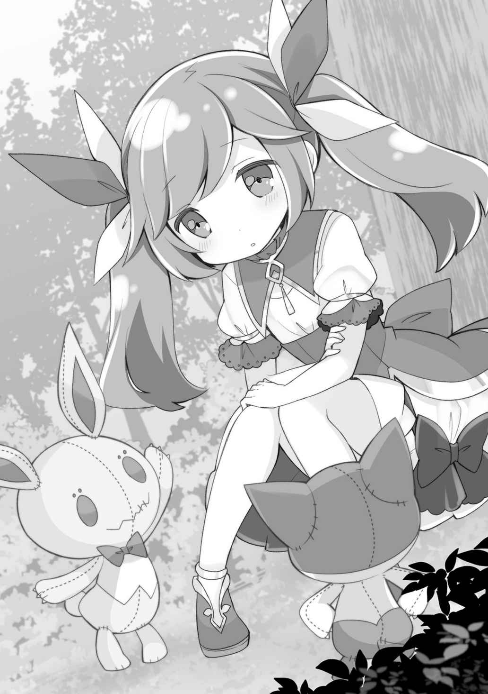

プロローグ
「仮初の命」
巨大な樹の幹に寄りかかった少女が、胸に抱いた二体の人形に向けて小さく呟く。
その言葉に反応するように、少女の左胸の紋章が淡く輝く。そして、その輝きが伝播したかのように二つの人形がわずかに光を帯びた。
それは文字通りの「命の輝き」。
少女──アラミラの祝福者カエデが起こすことができる神の力だった。
「ゴモちゃん、メレちゃん」
少女がそう名を呼び、抱きしめていた二体の人形を解き放つ。人形は、地面に転がることなく、重力に逆らいフワリと二本の脚で立ち、クルリと身をひるがえした。
『どーしたカエデ、元気がねーじゃねーか』
『おうちのことで、なやんでいるのね』
ゴモと呼ばれた人形は粗野な口調、メレと呼ばれた人形はおっとりとした口調で、沈んだ表情のカエデを気遣った。
今、この場所には誰もいない。よく晴れた午後の昼下がり、みなそれぞれの仕事に精を出している時間である。カエデは「ハァ」と、ひとつため息をついてから答えた。
「いつも、明るくしていようって決めてたんだけどね……。私、島で一番年下だし、私が元気にしてれば、みんな安心できるんだから」
その言葉は人形に向けたものなのか、それとも独り言だったのか、普段カエデがあまり口にすることのない、心情の吐露だった。
「今日、ゴモちゃんとメレちゃんがうちに来たときの夢を見たんだ。二人は覚えてる？」
『覚えてるぜ！』
『覚えてるわ』
即答する二体だったが、実際にその記憶があるのかは怪しいものだ。だが、それを追及してみても意味がない。
あの日──カエデの五歳の誕生日でやってきたこの二体の人形は、無骨者である父親が選んだにしては気の利いたもので、すぐにカエデにとって掛け替えのない宝物になった。
「パパもママも……心配してるよね……。私のこと、探してるのかな。私ね……お兄ちゃんは、誰もこの島には助けに来ないって言うけど……でも、今日にも、あの水平線の向こうからパパが船に乗って私を探しに来てくれるって……そんなこと考えちゃうんだ。神殿の船が来るかもって、みんなピリピリしてるのに……バカみたいだよね」
『カエデはバカじゃないぜ！ 助けに来るかもしれないだろ！』

『そうよ、カエデはバカじゃないわ！ 助けに来るかもしれないもの』
二体の人形が、ぴょんと飛び跳ねながらカエデを励ます。
実際にどうだろうか。可能性は……ゼロではないとカエデは思う。
自分は一人娘で大事にされていたし、父親も母親も自分がいなくなって泣き叫んだだろうことは、容易に想像ができたからだ。
うぬぼれでなく、私を探すためならば、どんなことでもするだろう。──あるいは、神殿を敵に回してでも。それがカエデの結論だった。
だが、自分を救ってくれた恩人であるカイの言うこともまた、理解できるのだった。
カイはカエデと一つしか年齢が違わない。カエデは平均よりも小柄であるが、それでも背格好はそれほど違わず、まだまだ少年と言って差し支えない姿だ。だから、決して歳をごまかしているわけではないはずだが、カイは自分より遥かに精神的に大人だった。
その彼が「助けは来ない」と断言したのだ。
ならば、実際にそうなのだろう。
「……だから、これはただの独り言。島のみんなも、ここでの生活も好きだけど……でも、やっぱり今すぐにでも飛び出して、パパとママに会いたい。会って、無事だって伝えたいんだ。でも、こんなの我が儘だよね……。私、いやな子だ」
『我慢することないんだぜ、相談してみようぜ！』
『そうよ、我慢する必要なんてないわ。自分に素直になって』
カエデは、二体の人形──ゴモとメレをぎゅっと抱きしめた。
人形達が言うように、相談すればカイはきっとすぐにでも手を尽くしてくれるだろう。カエデの故郷が帝国の旧都であることまでは、わかっているのだ。彼の能力ならば、たちまちカエデの家族を見つけて帰ってくることだって不可能ではないだろう。
だが、それよりも島のことを優先しなければならないというのも、やはり理解できた。カイが正しく、自分の想いがただの我が儘なのだと。
所詮はカエデ個人だけのこと。全体と比べることなんてできないし、なにより──
「……だめ。お兄ちゃんだって、我慢してるんだから」
カイの境遇もカエデと同じなのだ。
それなのに、自分のことは一番後回しにして、みんなのことを優先してくれている。カイだって、家族に会いたいはずなのに。家族に無事を伝えたいはずなのに。
それなのに、おんぶにだっこで命を救ってもらった……いや、現時点でも命を救ってもらい続けているカエデが、我が儘を言えるはずがなかった。
『ならできることをやるしかないぜ！』
『少しでも早く仕事を片づけるしかないわ』
抱きしめた二体の人形がワキワキと動きながら言う。
その通りだ。今、目の前にあることを精一杯やるしかない。
それがすべての近道となるのだ。
そういえば、ファーレーの教えにも同じような言葉があると、カエデはふと思い出した。確か『今を全力で生きる者だけが明日への扉を開く鍵を手に入れる』だったか。
──お兄ちゃんは、教えそのものがすべて間違っているわけでもないし、ファーレー教が丸ごと間違っているわけじゃないって言ってたけど……。
それでも、自分がこういう境遇に置かれれば、神殿そのものを否定したくなる。しかし、カイは決して、そういう風に考えるべきではないとカエデを諫めた。
カエデにはそんなカイの姿が、とても大人びて見えたのだった。
「ほんと……敵わないな」
ひとり呟き、立ち上がる。
今、ただでさえカイにいろいろなことを押し付けているのだ。
「自分のできることを、精一杯。うん！」
目の前に広がる、自分たちの国。
まだまだ手付かずの自然だらけの開拓中の島。
気持ちを整えたカエデは、できることをするため、丘を駆け下りていくのだった。